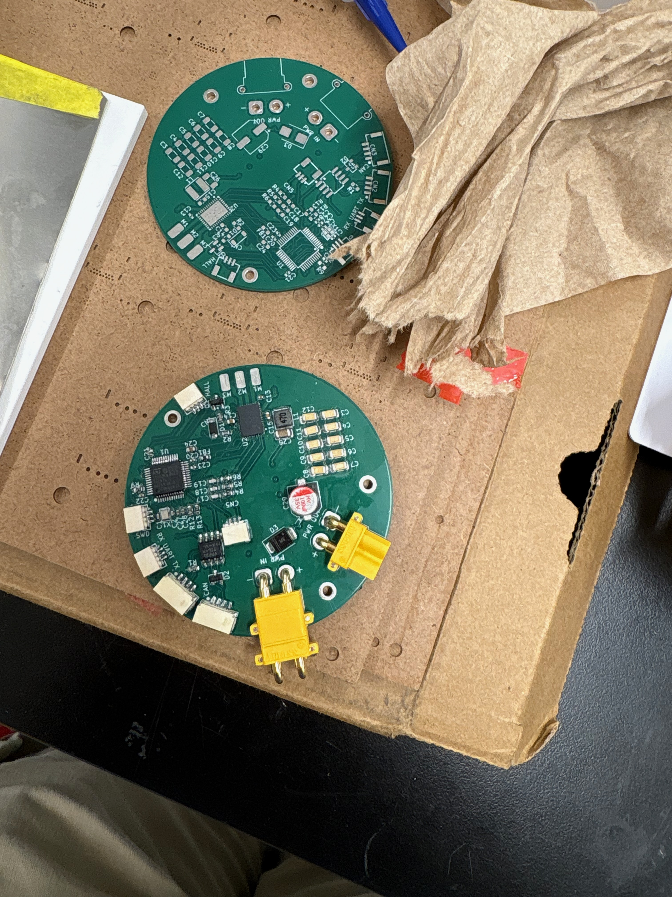
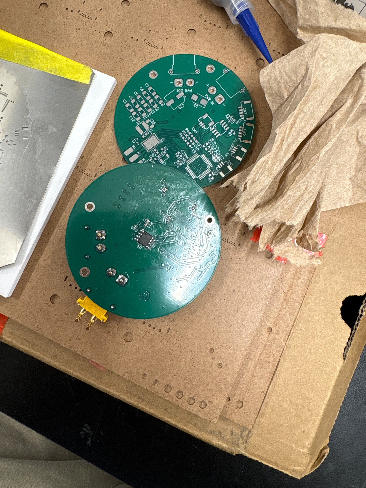
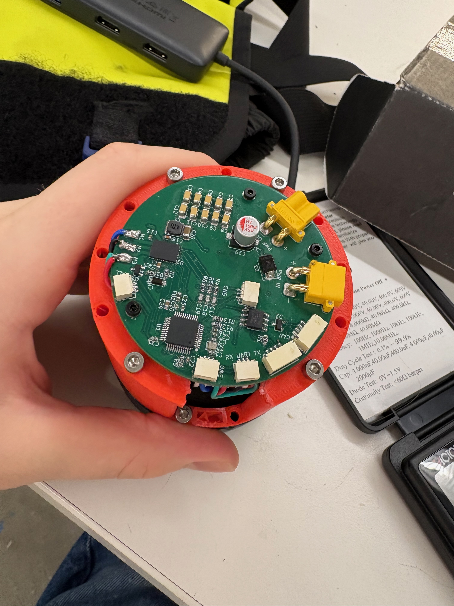

I've done a little more research, and the project idea has materialized more. I plan on using a low-Kv brushless DC motor paired with a custom driver circuit board that I am still in the process of making. I anticipate that the final component cost for the PCB's will be in the realm of 20-30 USD, including the STM32G431 microcontroller, DRV8316 motor driver, magnetic angle sensor, and other peripherals like the CAN transcievers and connectors. Beyond that, there will be multiple different sizes of bearings, such as the ones for stabilizing the output, smoothing the output, and metal pins for the outside of the cycloidal gearbox. The large bearing will probably be 60-80mm inner diameter and about 6-10mm larger OD. Other than that I will need machine screws as well as 8-10mm OD bearings for the other smaller moving parts inside the drive.
Since MVP, I've designed and finished my custom driver PCB that integrates the angle sensor and DRV8316 motor driver with an STM32G431 microcontroller. I was able to get a simple implementation of simpleFOC running on it, but I had to calibrate the angle sensor due to inaccuracies in mounting and angle leading to the sensor not being perfectly on the motor axis. I also had to calibrate estimated motor current since the current sensing capabilities of the board do not work, as I forgot to connect the adc reference voltage to the DRV motor driver. Additionally, I wired the input power connector backwards by accident, but that's okay, since I can just wire the input power backwards again, cancelling it out. I also designed an enclosure extension that connects the motor to the PCB (pictures below).
=
Assembled PCB(front) next to blank PCB

Assembled PCB(back) next to blank PCB

PCB mounted to motor casing